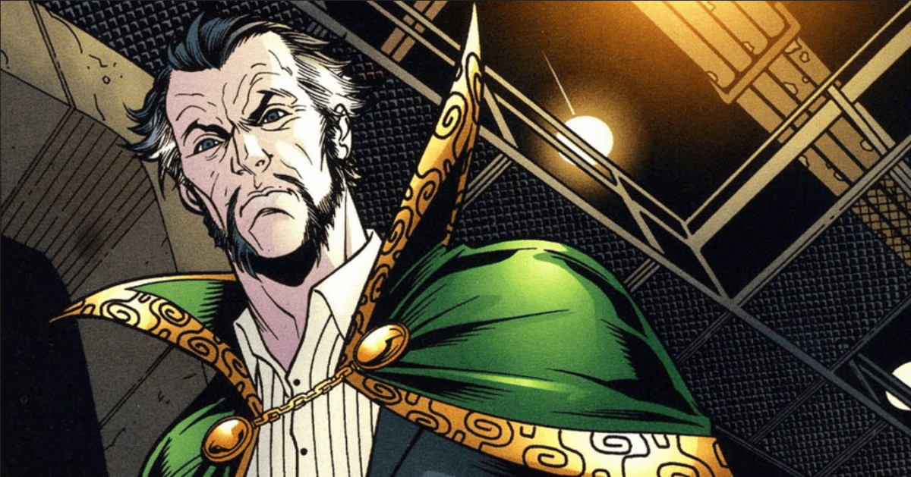

Top 5 adversários do Herói
Há anos o Batman surge pelas ruas de Gotham City protegendo a cidade das mais diversas ameaças, desde ações realizadas por pequenos grupos até confrontos com inimigos que acabam dando um pouco mais de trabalho. Muitos deles já foram retratados em filmes e certamente figuram na lista de principais adversários do Homem-Morcego.
Coringa
Certamente um dos mais lembrados. Na versão mais aceita pelos fãs (apresentada nos quadrinhos Batman: A Piada Mortal), ele é um funcionário da Indústria Química ACE que deixa o emprego com o intuito de se tornar comediante, algo que não dá muito certo.
Como tem uma esposa grávida para sustentar, acaba se envolvendo com o crime se passando por Capuz Vermelho e tentando realizar um assalto em uma fábrica de baralhos. O plano dá errado e ele, acuado por Batman, pula em um tonel de produtos químicos. Ao sair de lá, está com a pele branca, os cabelos verdes e fora de suas faculdades mentais.
Apesar de não ser o inimigo mais forte fisicamente falando, é capaz de deixar marcas profundas no herói, como quando aleija Bárbara Gordon (a filha do comissário Gordon, que atendia como Batgirl e se torna a Oráculo após ir para a cadeira de rodas) e assassina Jason Todd, o segundo Robin.
Pinguim
Pinguim é o codinome criminoso de Oswald Chesterfield Cobblepot, que teve uma infância cheia de traumas. Após perder o pai por conta de uma broncopneumonia, a mãe não permite que saia de casa sem carregar um guarda-chuva, mesmo em dias de sol. Isso faz que ele acabe sofrendo com provocações de outros garotos, o que lhe rende o apelido "Pinguim" por conta de seu excesso de peso e de seu nariz fino.
Em sua vida criminosa, usa pássaros e guarda-chuvas adaptados com armas na tentativa de deter seu maior inimigo, mas Batman acaba usando a vaidade de seu rival como um de seus trunfos na hora de derrotá-lo em combate.
Charada
Charada, como o próprio nome dá a entender, é um inimigo que gosta de brincar com enigmas, os quais envia para polícia indicando seu futuro crime e que geralmente são desvendados com a ajuda de Batman.
Seu verdadeiro nome é Edward Nashton, e, diferente de outros oponentes do vigilante de Gotham, acaba usando bem mais seu cérebro na hora de causar algumas encrencas na cidade. Seu talento inclusive o leva a deduzir a identidade real do morcego mascarado, mas sua obsessão por enigmas faz que ele não revele esse dado a ninguém (como o próprio Batman explica, “qual é a graça de uma charada que todo mundo sabe qual é a resposta?”).
Bane

Bane é um dos vilões mais icônicos dos quadrinhos, mas nos filmes live-action ele só apareceu duas vezes até aqui. A primeira versão foi bastante criticada, por transformar o personagem em apenas um grandalhão com pele esverdeada e que apenas faz grunhidos, interpretado pelo lutador Robert Swenson.
Mas no capítulo final da trilogia de Nolan, Bane apareceu como nos quadrinhos: um vilão extremamente inteligente, forte e que mete medo em qualquer um.
Ra's al Ghul
Ra's al Ghul é um dos mais ferozes vilões que o Batman já enfrentou nas páginas dos quadrinhos. Ele é o líder da Liga dos Assassinos, uma organização secreta dotada dos criminosos mais letais de todo o planeta, sendo que para além disso ele tem o conhecimento acumulado ao longo de centenas de anos.
Sim, você leu bem. Ra's al Ghul tem centenas e centenas de anos de vida, pois ele é capaz de regenerar o seu corpo graças às águas mágicas do Poço de Lázaro.
Fontes:
https://www.tecmundo.com.br/cultura-geek/212602-inimigos-batman-conheca-adversarios-do-super-heroi.htm
https://www.aficionados.com.br/ras-al-ghul-dc-comics/